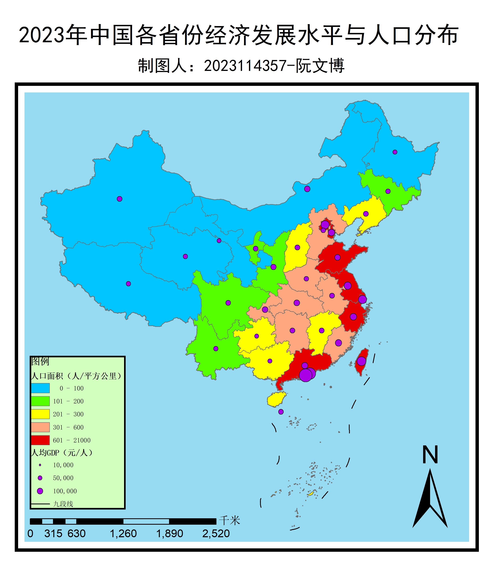

综合专题地图
面状底色表示人口密度，紫色圆点表示人均GDP
区域人均GDP分布
六大区域及省份人均GDP复合饼图
区域人口密度排行
按人口密度为省份/地区排名的柱状图
数据概览
34
省级行政区
6
经济区域
2
数据类型
3
可视化类型
数据来源：2023年中国统计年鉴
更新时间：2025年12月
综合专题地图
面状底色=人口密度，紫色圆点=人均GDP（圆点大小与人均GDP成正比）
2023年中国六大区域-省份人均GDP分布
点击区域查看省份详情，点击任意位置返回区域视图
2023年中国各省份人口密度自定义表
单位：人/平方公里
项目说明
项目背景
本项目基于2023年中国各省份GDP、人口及面积数据，通过多种可视化方式展现中国各地区经济发展水平与人口分布特征。
数据来源
- 2023年中国统计年鉴
- 国家统计局公开数据
- 各省份统计公报
可视化技术
ECharts
开源可视化库，用于创建地图和图表
HTML5/CSS3
响应式网页设计，适配多种设备
JavaScript
实现交互功能和动态效果
专题地图说明

图例说明
- 人口密度：0-100人/平方公里
- 人口密度：101-200人/平方公里
- 人口密度：201-300人/平方公里
- 人口密度：301-600人/平方公里
- 人口密度：601+人/平方公里
- 人均GDP圆点（大小与数值成正比）
注：九段线表示中国南海疆界，是中华人民共和国的固有领土。
作者信息
制图人：2023114357 阮文博
联系方式：如需获取源码或数据，请访问GitHub项目页面